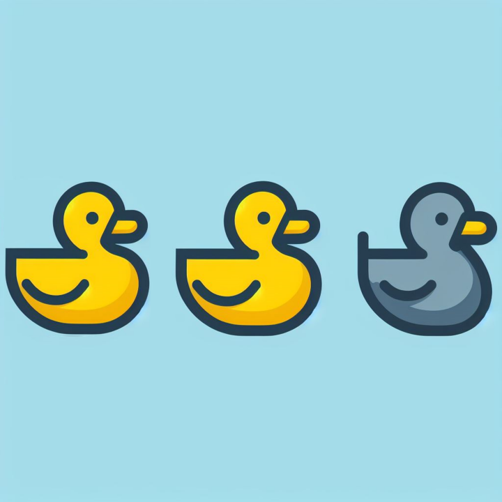

Understanding various forms of AI. With ducks.

Generative AI does a lot of things. But one of the larger distortions in the market is the assumption that it is the right answer for every problem. Other types of artificial intelligence have been around for some time, remain viable, and are often preferable and more cost-effective depending on what your business is trying to solve. The right tool is derived from the right objectives. This field note breaks down Robotic Process Automation, Machine Learning, and Generative AI using a simple framework: three birds walk into a bar in Minnesota.
A fast primer on the primary types of AI and their relation to generative AI, told as a bar joke involving animals and Minnesota's specifically unique way of making even children's games more complex, because they felt they should. Just to be different. This type of thinking is also why we lost the 1998 NFC Championship against Atlanta.
There are a lot of big words in this AI world. This bar joke exists to help remember the differences between Robotic Process Automation, Machine Learning, and Generative AI in plain terms.
The bartender is acutely interested in counting the ducks that walk into the bar, and who can blame him, really? Ducks are heavy drinkers. They would swim around in it all day if you let them. The bartender has bought three cameras in the bar to test out which one can really count those ducks for him.
The first camera uses Robotic Process Automation. It has been given specific rules, because RPA loves very defined and deterministic rules. In this case, there are rules and conditional logic driving a conclusion:
"If it looks like a duck, and it acts like a duck, it's a duck."
After viewing the three birds, the camera relates the images to its rules and deduces that it sees two ducks. It discounts the third bird entirely, because the camera simply does not think it looks like a duck, nor acts like a duck. It is something different.
The RPA camera sees the following: two ducks.
It is not wrong. It is just seeing what it was trained to see. And maybe that is all you need.
The second camera uses traditional machine learning. It has been given rules, yes, but they are more like guidelines from which it guesses at things:
"If it mostly looks like a duck, and mostly acts like a duck, it's likely a duck."
After viewing the three birds, the ML camera infers that it sees three potential ducks. Two of the birds are quite clearly ducks. The third is a bird that quacks, waddles, and is also interested in drinking. It is gray, though: whereas the other two ducks were white, this one is gray. But it is close. Maybe close enough to matter to the bartender.
The traditional ML camera sees the following: duck, duck, gray duck.
Over time, it will likely get better at this, because ML technologies tend to learn based on feedback about their accuracy.
The third camera uses generative AI to count the ducks. In this case, it has not been given any rules at all. It has simply been given a lot of information about ducks, and birds in general. And it has been given a simple instruction:
"Identify the animals you see, and tell me how many of them are ducks."
After viewing the three birds, the GenAI camera infers that it sees two ducks, surely. But it also points out that not only are there two ducks, but that the third bird is a GOOSE. It has made its own rules, based on the task given to it.
The Generative AI camera sees what is actually there: duck, duck, GOOSE.
Moreover, this camera is quite chatty, and happy to tell you about anything you would ever want to know about the differences between ducks and geese. Just pull up a chair and grab a beer because it will break it down to levels you will not believe. You have bought yourself a world-class ornithologist and you better order another round, because Cliff Clavin has entered the room. And like Cliff, sometimes it will make things up. But even Cliff knows it is really duck, duck, goose.
That depends.
Do you want to count ducks, and only ducks, as cheaply as possible? RPA solutions are likely in the mix.
Do you want to get a good approximation of the number of ducks, as well as other potential birds that may also drink heavily? Might need to invest a bit more in ML technology.
Do you want to understand the worlds of ducks, geese, and any other bird that may come your way? Generative AI is your best bet. But you will pay more for it. And you will need to be flexible, because in a few months, there is likely another GenAI camera coming that will tell you even more about birds.
RPA, traditional ML, and Generative AI all sit within a broad field of AI technologies. They all work. They vary by cost, precision, and use case. Ultimately, whether you want to play duck, duck, gray duck or the more proper duck, duck, goose is up to you.
| Dimension | RPA | Machine Learning | Generative AI |
|---|---|---|---|
| Logic | Rules-based | Guidelines-based | Pattern-based |
| Approach | Deterministic (if-then) | Probabilistic inference | Contextual synthesis |
| Rule style | "If it looks like a duck..." | "If it mostly looks like a duck..." | "Identify what you see." |
| Learns? | No | Yes, from feedback | Yes, from context |
| Handles ambiguity? | No | Somewhat | Yes |
| Output | Two ducks | Duck, duck, gray duck | Duck, duck, GOOSE |
| Cost (approx.) | $5/mo | $10/mo | $20/mo |
| Sweet spot | Defined, repeatable tasks | Pattern recognition at scale | Unstructured reasoning and creation |
This article was originally written in collaboration with GPT-4 and published October 2023. Woody Taylor is the founder of Paramis.ai, where he works with organizations to bring AI technologies to bear in their business in effective, efficient ways.
If you want help figuring out which technologies fit your business, let's talk.
Get in Touch →